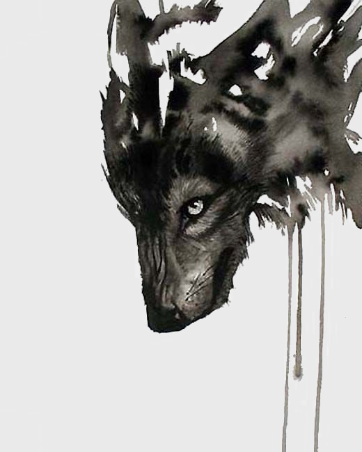

wolf
The fact that wolves are very social animals by nature is part of why this works.
The home range of a pack of wolves can overlap with that of other wolves. As long as food is plentiful they will usually ignore each other and continue on their way. When food is scarce though they may battle to determine which pack has the right to feed there.
